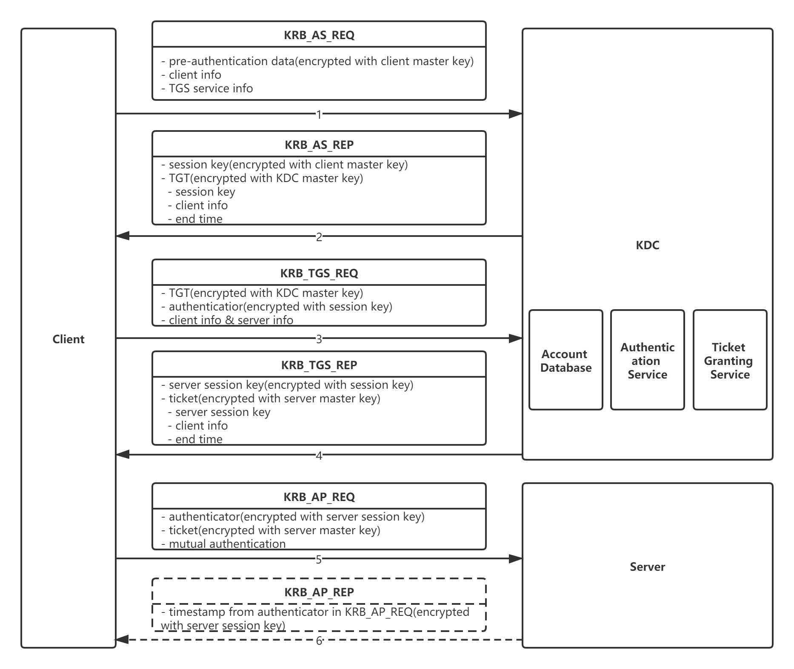

概述
最近做了很多安全整改的事情，包括禁用SMBv1协议，开启SMB协议传输加密，开启NTLMv2认证等等，也尝试做了RHEL集成Active Directory来实现统一账户管理，发现自己在Windows认证方面存在大块知识盲区，趁着还在兴头上，赶紧研究一下。参考文档：
Microsoft NTLM
Microsoft Negotiate
Microsoft Kerberos
首先科普一个知识点
为什么需要采用hash做加密或签名算法，它有什么特点？
-
不可逆性。当你得到一个值x的hash值的时候，你没有办法倒推得到值x。
-
无冲突性。当你知道一个值x，你无法求出一个y，使得x与y的hash值相同。
*实际上这两条特性在数学上是不成立的，一个函数必然是可逆的，另外由于hash函数的值域有限，理论上存在无穷多个不同的值，它们的hash值相同。比较有名的hash算法MD5和SHA实现的是，求逆和求冲突在计算上不可能，也就是正向计算很容易，而反向计算即使穷尽人类所有的计算资源都做不到。
Windows本地认证
Windows以明文形式存储用户密码么？答案是否定的，Windows将用户的明文密码经过NTLM Hash算法加密后，存储在%SystemRoot%\System32\config\sam文件中。当用户登录时，将用户输入的明文密码也用NTLM Hash算法加密，得到的Hash值与sam中的值进行对比。如果结果相同，则认证通过，成功登录。反之，登录失败。本地登录时，两个进程参与工作winlogon和lsass。简单来说就是winlogon接收用户输入账号密码，把用户密码交给lsass进程做密码比对。

Windows网络认证——NTLM认证
Windows网络认证主要分为NTML认证和Kerberos认证，先讲一下NTML认证。认证流程主要分为协商、质询Challenge/Response、验证三步骤。在协商阶段，客户端和服务端确认使用什么认证协议，是使用Kerberos还是NTLMv1或者NTLMv2？微软官方是推荐通过协商来选择更安全的认证协议的。如果选择了NTLM认证，则进入下一步质询Challenge/Response。NTLM分为交互式和非交互式两种类型，交互式即用户客户端登录，只有客户端和域控参与此认证过程。非交互式指客户端要去连接某台服务器并访问相关服务，这种情况下会有客户端、服务端和域控三方参与认证过程。下面简述一下非交互式的认证步骤。其中第一步提供用户名和密码仅存在于交互式认证。

- (仅限交互式认证)用户登录时输入的user name、password和domain name，然后Client端计算password的hash值并保存在本地并且丢弃真正的password。
- 客户端将user name的明文发送给服务端。
- 服务端生成一个随机数，叫做challenge，传输给client。
- client收到challenge以后，将challenge用password hash加密，得到的结果叫做response，然后将response传给server。
- server端将以下三份内容发送给DC，user name、challenge、response。
- DC在收到user name，response，challenge以后，根据user name在account database中找到其对应的password hash，然后用这个password hash加密challenge。
- DC将response与上一步加密后的challenge进行比较，如果相同则NTLM验证成功。
最后再提一下NTLM v1和NTLM v2的区别吧
- Challenge，v1的Challenge有8位，而v2的Challenge是16位。
- 对Challenge加密的算法不同，v1算法为DES，v2算法是HMAC-MD5。
Windows网络认证——Kerberos认证
在开始讲Kerberos认证过程之前，先讲几个概念吧。
- KDC - Key Distribution Center，作为Client和Server双方都信任的第三方参与到认证中，一般都DC来担当此角色，KDC上存在AS(Authentication Service)、TGS(Ticket Granting Service)、Account DB三个重要服务来支持Kerberos认证过程中的三个sub protocol(Authentication Service Exchange、Ticket-Granting Service Exchange、Client/Server Exchange)。
| sub protocol | meaning |
|---|---|
| Authentication Service Exchange | 由KDC给Client分发session key和TGT(ticket-granting ticket) |
| Ticket-Granting Service Exchange | 由KDC给Client分发和Server认证的session key以及ticket |
| Server Exchange | Client使用ticket申请访问Server |
- master key - 指长期不改变的密码派生出来的key，也叫long-term key，被master key加密的数据不应该在网络上传输。原因很简单，一旦这些被master key加密的数据包被恶意的网络监听者截获，在原则上，只要有充足的时间，他是可以通过计算获得你用于加密的master key,因为没有一种加密算法是绝对安全的。后面所涉及的master key主要指用户密码的hash值。
- session key - 和master key是相对的概念，也叫short-term key。建议用session key来加密数据并进行网络传输，因为session key有效时间短，即使被黑客截获，他也没有足够的时间去做破解。
- authenticator - kerberos中除了验证hash code或session key，还引入了验证authenticator的机制，而authenticator中主要包含了timestamp，通过验证时间时间戳，来保证即使黑客截获数据包，也无法在数据包的有效时间内破解。
下面正式开始Kerberos认证流程。

Authentication Service Exchange
这一步主要是client向KDC申请下一步认证的session key和TGT。首先向KDC的AS服务发送一个KRB_AS_REQ请求数据包，数据包内包括客户端的信息（domain name，client hostname，user name）、TGS服务信息和pre-authentication数据，正如上面所提到的authenticator一样，这个pre-authentication主要就是client生成的时间戳，并且pre-authentication是以client master key加密的。当KDC收到KRB_AS_REQ以后，通过client user name从account db内找到对应的master key，然后对pre-authentication进行解密，并对其中的时间戳进行验证，如果验证通过，KDC会生成一个随机的session key，接着拷贝一份并以client master key加密session key。另一份session key会和client info一起打包进TGT，同时TGT包内存在一个end time，TGT也是有生命周期的。TGT会以KDC自己的master key加密。最后TGT和被client master key加密后的session key以KRB_AS_REP的形式发送给client。client收到后，以client master key解密得到session key，接着把session key和TGT存储在内存中，第一步到此结束。
Ticket-Granting Service Exchange
这一步是client向KDC申请和server认证通信的server session key和ticket。首先client给KDC的TGS服务发送KRB_TGS_REQ数据包，数据包内包含了client info和server info（这里的server指的是client最后要访问的server）、TGT以及以session key加密的authenticator。KDC收到数据包后，先以自己的master key解密TGT，拿到TGT内的session key（这里提两点。1.TGT内有end time，KDC会验证这个end time，如果超时，此TGT就无效了，Kerberos认证需要从头开始，申请新的session key和TGT。2.KDC本机不会维护session key，完全由client发送提供，这样做的认证效率较高。），再用session key解密authenticator，验证其中的时间戳，如果验证通过，KDC会生成一个新的server session key，并以之前的session key加密它，生成server session key的同时拷贝出另一份，将它和client info打包进ticket（ticket内也有end time），ticket以server master key加密，最后以KRB_TGS_REP的形式发送给client。client收到数据包后，以session key解密得到server session key并保存。
Server Exchange
这一步client已经拿到了最后和server建立通信的ticket，KDC的参与也到这里结束了。client发送KRB_AP_REQ数据包给server，数据包内包含以server seesion key加密的authenticator、ticket。另外由于Kerberos支持双向认证，即server在认证client以后，client也可以要求认证server的身份，因此KRB_AP_REQ数据包内包含mutual authentication。server收到数据包后，先以自己的master key解密ticket（解密后会验证end time，这里不赘述了），拿到ticket中的server session key后，解密authenticator验证时间戳，如果通过验证，则Kerberos验证通过。最后如果刚刚提到的mutual authentication值是true的话，server会发送KRB_AP_REP给client，其中包含从authenticator中提取出来的时间戳并以server session key加密，client收到后用server session key解密拿到时间戳，和自身先前生成的时间戳对比，如果相同，则对服务器身份验证通过。到这里Kerberos验证流程结束。